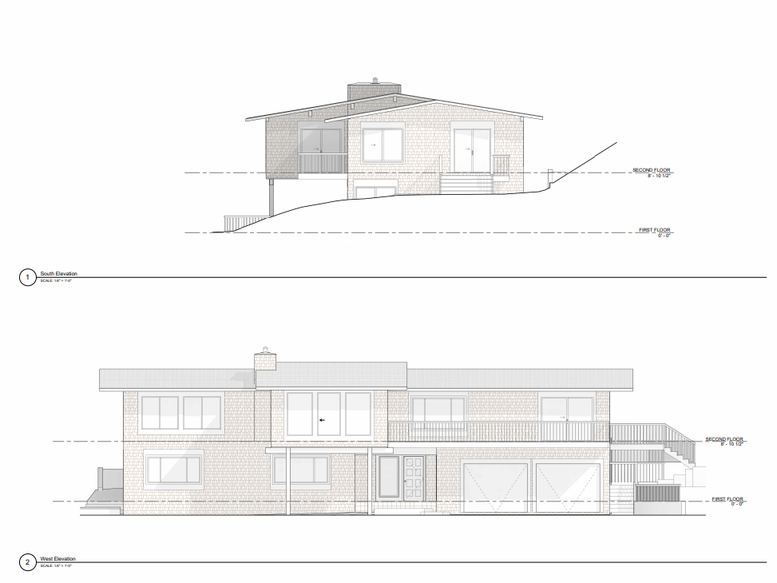
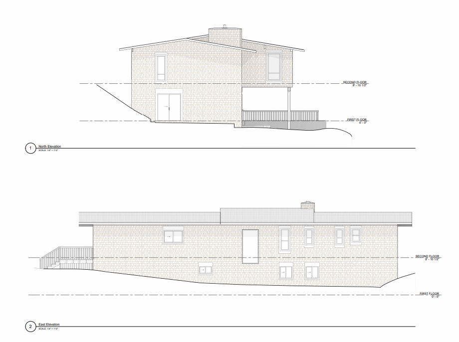

Point cloud and BIM
From existing conditions to model.
We process laser scanning and photogrammetry data and turn the point cloud into as-built BIM models in Revit or IFC, with reliable plans and sections for renovation, retrofit and coordination.
Four lines of work.
Each area can be hired on its own or combined with the others.
As-built Revit model
Walls, openings, floors, roofs and structure modelled to the agreed level of development (LOD).
Existing-conditions drawings
Dimensioned plans, sections and elevations from the model, in DWG and PDF.
Built vs. design
Point cloud compared against the design model, with deviation maps in millimetres.
Retrofit and heritage
A reliable base for renovation, extensions, HBIM and facility management.
Examples.
Images produced by BRD. Those marked BRD participation come from real projects; the others use illustrative models.




Want to apply this to your project?
Send us what you have, even if it's just an idea or a study file. We'll reply with a scope proposal.